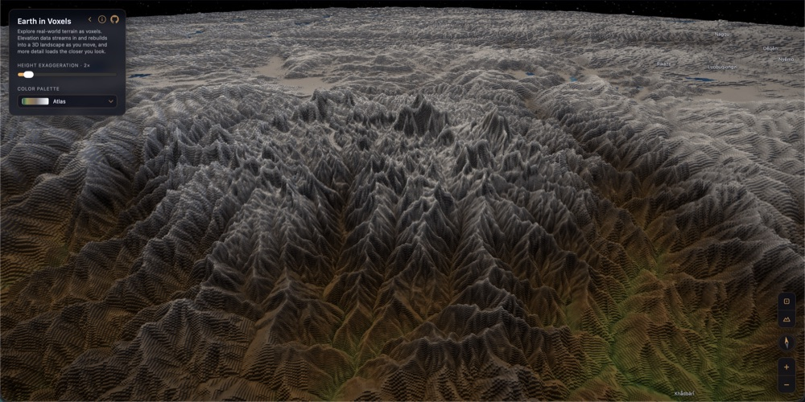
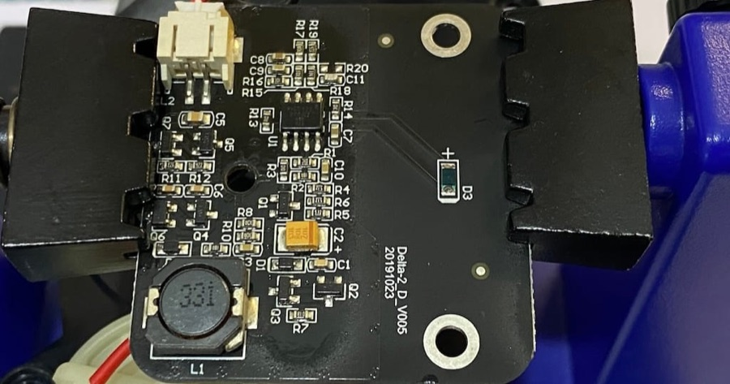
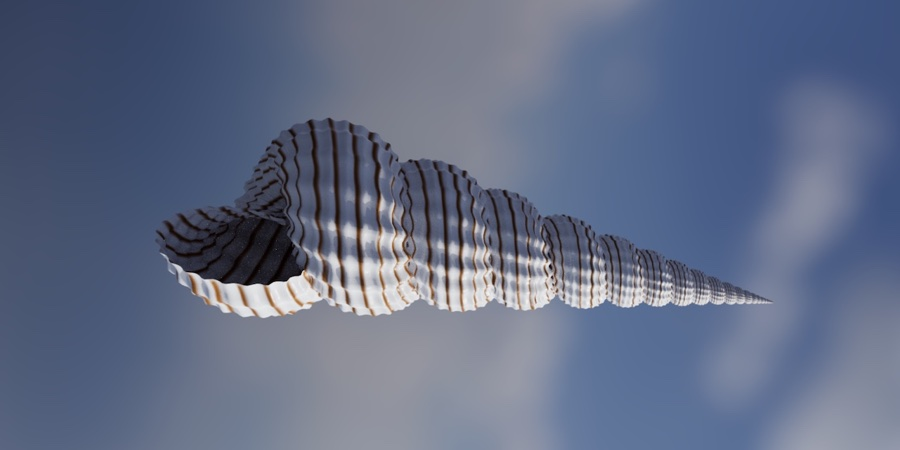
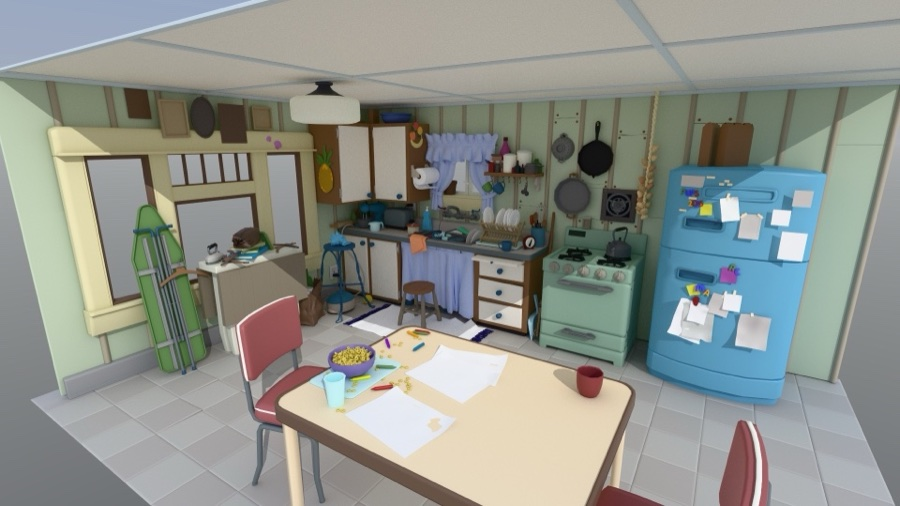
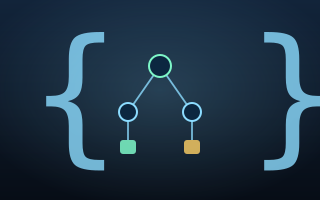
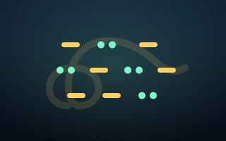
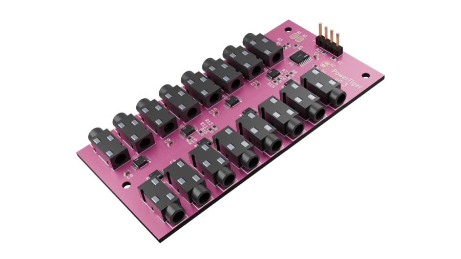
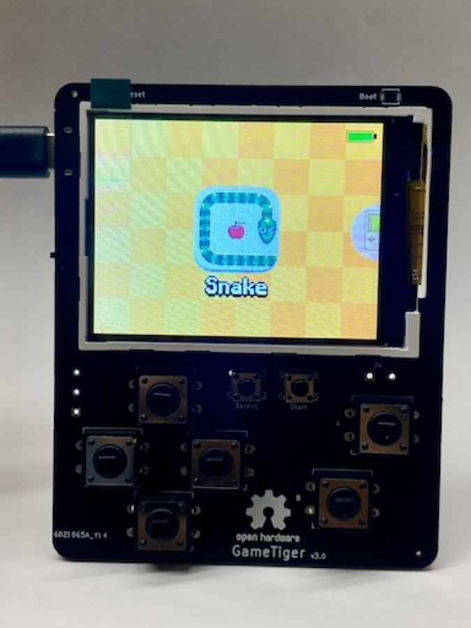
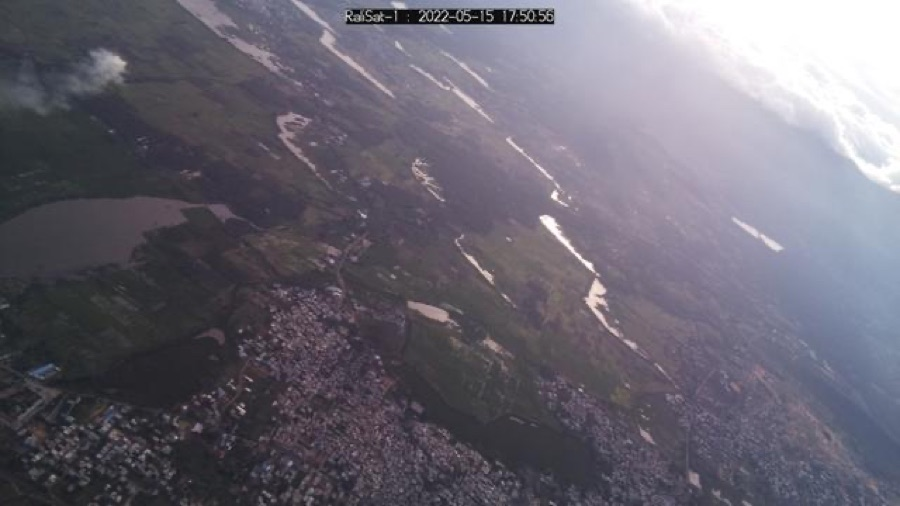

▸ Graphics
Earth in Voxels
Streams a Web-Mercator height-tile pyramid, voxelizes it across web workers, and lets you roam a 3D globe with distance-based level of detail.
Graphics, simulation, language, and a hacked robot vacuum — the things I build when I'm following my curiosity.

Streams a Web-Mercator height-tile pyramid, voxelizes it across web workers, and lets you roam a 3D globe with distance-based level of detail.

Tearing down a 3irobotix CRL-200S robot vacuum: documenting its hardware and protocols, then writing a modular open-source Rust firmware with SLAM and navigation.

A generative simulator that grows seashell pigment patterns from a reaction model, compiled to WebAssembly and rendered in the browser.

A 3D animation studio for iPhone, iPad, and Mac with a Metal ray-tracing renderer and an AI scene editor — build and keyframe scenes from natural language and export up to 4K.

A fast Rust implementation of JSONLogic for evaluating portable, JSON-defined rules and expressions.

Breaks a Tamil verse into syllables, mora, and metrical feet, then classifies it into classical forms (Venba, Asiriyappa…) with declarative JSONLogic rules — entirely in-browser via WASM.

An open-source household energy monitor: a custom KiCad PCB feeds up to 16 clamp-on CT sensors into a Raspberry Pi Pico W running CircuitPython, streaming per-circuit power to a Grafana dashboard.

A retro handheld game console built on the RP2040 — a custom PCB, a colour LCD, and a from-scratch C framebuffer and sprite engine running Snake, Tetris, 2048, Minesweeper and more.

A high-altitude balloon reaching toward the edge of space, carrying a Raspberry Pi payload with GPS and LoRa telemetry to photograph the curvature of the Earth on its ascent.